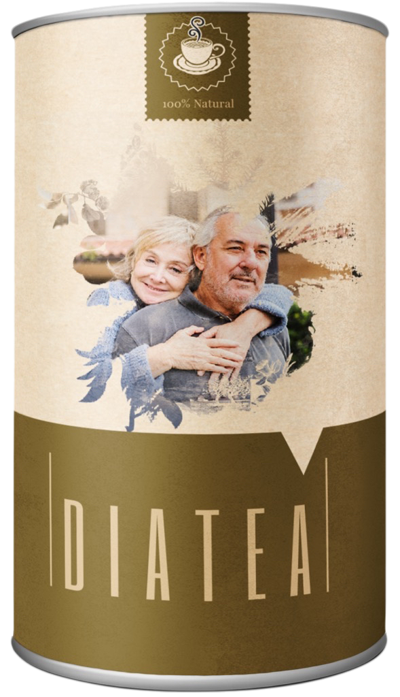

Последни новини: фармацевтичната индустрия срещу д-р Оз заради революционния му лек за диабет

Популярният американски кардиохирург и автор, д-р Oз, в момента е водеща новина в социалните медии. Трите най-големи фармацевтични компании в света са завели дело срещу него.
Фармацевтичните гиганти го обвиняват, че популяризира непроверено лекарство, наречено – чай, който случайно е попаднал на доктора. След като се убедил в качествата му, Оз го препоръчва на всички свои последователи, което разгневи големите играчи във фармацевтичния бизнес.
От друга страна, обществената оценка е, че фармацевтичното лоби е в паника, защото „краде“ от печалбите им.
Д-р Оз е един от водещите експерти в съвременната медицина. Неговите последователи вярват и знаят, че той никога няма да препоръча нещо, което би влошило здравето на пациента.
Неговите данни, базирани на предишни изследвания, показват, че е допринесъл за лечението на диабета при повече от 273 000 души годишно по целия свят.
Кой е д -р Оз?
Оз е кардиохирург и професор в Колумбийския университет. Той изучава формулата , след като се свързва с херболога Ива Попова, родом от Балканите. Попова твърди, че комбинацията от билки, които могат да бъдат намерени на територията на България, както и в останалата част от региона, е най-доброто лекарство при висока кръвна захар.
Оз подхожда внимателно към изследванията, свързани с . С течение на времето към него се обръщат други учени от Австралия, Япония и Южна Африка, които използват същите или сродни растения, за да помагат на пациентите си. Когато приключва с експериментите си, всичко му става ясно. Има лек, който елиминира диабета завинаги!
„Най-накрая открихме проста рецепта за лечение на диабет и тя няма да ни подведе“, каза той.

Дела, ниски печалби и съмнителни действия
Д-р Оз популяризира на своя уебсайт и чрез реномирани медии, като Fox News. Той записва и специален епизод от шоуто си, в който говори за ползите от този препарат. Скоро се заговори, че съществува истински лек за диабета и историята поема нов ход.
Трите най-големи фармацевтични компании, които произвеждат лекарства за диабет: Merck, GSK и Sanofi, незабавно обединиха усилията си и заведоха съдебно дело, поради което Оз беше възпрепятстван да излъчи предварително записания епизод от шоуто си и трябваше да спре да популяризира на своя уебсайт...

Merck, GSK и Sanofi твърдят, че д-р Оз популяризира неодобрени медицински методи и практики. Техният адвокат отива още по-далеч и добавя, че „...все пак е по-добре да се използват техните лекарства“.
Случайно или не – три компании записаха спад в акциите от общо 18%, точно преди завеждането на делото.
Почитатели на личността и постиженията на д-р Оз използват социалните медии, за да разкрият, че загубата на печалби на големи компании е истинската причина, поради която Оз е изправен пред съдебен процес и е под натиск.
Оз разбира за средството за лечение на диабет на Попова преди девет години, но не може напълно да се отдаде на научен анализ по темата. Санофи, един от подписалите делото, изкупува организацията, която го финансира, и отменя изследването му.

Откритието на Оз
Наблюдавайки хиляди пациенти, Оз открива, че диабетът не причинява образуването на слой мазнина, който блокира инсулина и се натрупва около панкреаса, както смята медицинската общност.
Този слой мазнина, който блокира инсулина, всъщност е истинската причина за диабета!
Това е революционно откритие, което би могло да допринесе за изчезването на тази порочна болест от лицето на земята. Д-р Оз има солидни доказателства в подкрепа на своите констатации. Някои от тях са достъпни на уебсайта на – продукт, в който той вярва и от все сърце препоръчва.
Според него само за две седмици е помогнал на стотици хиляди жени и мъже да се преборят с диабета.
Клинично доказано
Оз проследява как води до пълно възстановяване при диабетици. Някои побеждават болестта само за 30 дни.
Една от успешните истории, които доказват ефективността на , е съдбата на 63-годишния Здравко Радев, родом от Смолян, който открива по време на престоя си в Чикаго със сина си, снаха си и внуците си.
Там Радев е диагностициран с напреднал стадий на диабет и е застрашен от ампутация на двата крака. Благодарение на старанието на сина си, който е лекар по професия, е открит и , след чиято активна употреба Радев е излекуван..
След като чухме за историята на г-н Радев, му се обадихме и го помолихме за снимки от устройството му за измерване а кръвна захар, докато е приемал .
Той е диагностициран с диабет преди осем години и оттогава се бори да понижи кръвната си захар. (Тъй като изображенията са от американски производител, мерните единици са показани в mg/dl.)
 Ден 1. 255 mg / dl =
14,2 mmol / l
Ден 1. 255 mg / dl =
14,2 mmol / l
„Измервах захарта си след обяд и тя винаги беше необичайно висока. След първата доза спрях да мисля. Около 20 минути по-късно се почувствах странно. Бях обзет от малко спокойствие. За момент дори забравих, че имам диабет.“
 Ден 15. 173 mg / dl =
9,6 mmol / l
Ден 15. 173 mg / dl =
9,6 mmol / l
„Бях шокиран. Захарта падаше, въпреки че ядях същото както винаги. Чувствах се по-добре, енергията ми се връщаше и вече не бях замаян както преди. До петия ден вече бях като нов. Дори свалих два килограма.“"
Ден 30.
„След 30 дни употреба на , напълно спрях да се съмнявам в ефекта му. Кръвната ми захар спадна до нормални равнища и се отказах от болезнените инжекции с инсулин. Най-хубавото е, че захарта продължава да пада. Първоначално си мислех, че си въобразявам, но когато отидох на лекар – той също го потвърди. Каза ми, че не е виждал нищо подобно за 28 години медицинска кариера. Развълнуван съм. Едва 30-ият ден е, а вече съм излекуван.“

Ден 60. 88 mg / dl = 4,9 mmol / l
„Два месеца по-късно вече не се нуждая от лекарства. Нивото на кръвната ми захар е постоянно в нормални граници. Честно казано, мисля, че съм излекуван. Не мога да повярвам. След толкова години борба с тази ужасна болест най- накрая съм свободен. Чувствам се все по-добре ден след ден. Имам все повече сили и не трябва да приемам всички тези лекарства, които междувременно започнах да мразя. И най-важното за мен – семейството ми вече не трябва да се притеснява за моето здраве. Чувствам се страхотно. Отслабнах с четири килограма.“
„Какво мисля за програмата ? – Това е нещо реално. Опитах толкова много различни програми и хапчета за осем години: Глюкоцил, Океани Баунти, Куркума, Берберин, Унищожител за диабет, 15-дневния диабет. Всичко, което съществува, опитах. Мислех, че няма помощ за мен, че няма надежда. Въпреки че в началото бях скептичен, сега съм благодарен, че опитах тази невероятна отвара. Ако сте уморени от постоянни инжекции или просто ежедневно чувство на слабост, е перфектният избор.“
Готови ли сте да кажете „сбогом“ на болезнените и скъпи лекарства? Ето как да поръчате вашата доза чай днес:
Какво казват потребителите за :
„Използвайки , станах много наясно с моя проблем, но и с неговото решение. Високата кръвна захар е нещо от миналото и ежедневието ми не е било така спокойно от много време насам. Освен това едва наскоро научих, че преди съм бил смятан за „раздразнителен човек“. Радвам се, че вече не е така.“
Христо Л.
Пловдив , БГ
„Използвам от около 3 седмици и харесвам ефективността на това лекарство. Захарта ми е стабилна при 5,0 mmol / L и начинът ми на живот е много по-пълноценен.“
Ана Т.
София, Балгария
„Откакто използвам , не само поддържам нормално ниво на кръвна захар, но и успях да сваля няколко килограма. Ако отворите горното чекмедже на кухненския ми шкаф, ще видите огромни запаси от този препарат. Той просто замени всичките ми предишни продукти за здравословно хранене и живот като цяло.“
Мария К.
Велико Тарново, БГ
„Ако някога е имало чудодейна напитка, то това е чаят . Да се отърва от диабета и в същото време да подобра физическия си вид, са резултати, които не очаквах да постигна толкова бързо и лесно. Просто казано, живея по- пълноценен и здравословен живот!“
Светослав Ч.
Благоевград, БГ
Мария Христова
Чаят изглежда изключително добър, бих могла да опитам. Вече нямам сили за лекари и хапчета, които причиняват милион други последствия! : (((
Отговор. 13 . Харесва ми .12 минути
Елена Пвлова
Определено поръчвам това за баща си... Убедих се от този текст и искрено се надявам да му помогне толкова, колкото и на вас. Благодаря ви много, че споделихте историята си с нас и осигурихте отстъпка! Всичко най-хубаво!
Отговор. 6 . Харесва ми .13 минути
Николай
Изобщо не вярвам в тези неща!!!
Отговор. 19 . Харесва ми .25 минути
Галина
По-добре би било, ако нямате доверие на нашите т.нар. лекари и хапчета, които само ни тровят и унищожават! Всеки с висока захар трябва да използва подобни продукти!
Отговор. Харесва ми .46 минути
Дария Тодорова
За щастие, ние също имаме опит в лечението с , и то е положително. Продуктът впечатлява с действието си. Диабетът преминава и не се връща!
Отговор. 43 . Харесва ми .преди около час
Костадин Белов
Бях толкова разочарован от хапчетата, лекаря и прегледа, че веднага поръчах този чай, щом го видях. Чакам го да пристигне и веднага ще го изпия.
Отговор. 3 . Харесва ми .ми преди 1 час,
_Даниела_
Моя приятелка работи в аптека и самата тя каза, че тези хапчета за диабет са чисто зло!!! Тя предложи на баща ми, при условие че се придържа правилно към инструкциите, и всъщност беше права... Използва го от преди около месец и засега е много доволен!!!
Отговор. Харесва ми . 2 часа
Милена
Точно това, от което имах нужда.
Отговор. 12 . Харесва ми .2 часа
Сара
Съпругът ми има висока кръвна захар и наистина се грижа за живота му, предполагам, че това няма да му е трудно, защото пиенето на чай е лесно.
Отговор. 30 . Харесва ми .2 часа
Красимира Попова
Съвети от опит;) Използвам чай и съпругът ми (който иначе е много упорит) ме послуша най-сетне. Сега е много щастлив от този факт.
Отговор. 53 . Харесва ми .2 часа
Христо59
Започнах да го пия. Минаха 7 дни и съм много доволен.
Отговор. 16 . Харесва ми .2 часа
Гуна
Точно това, което търсех :))))
Отговор. 11 . Харесва ми .2 часа
Златина Христова
Баща ми наскоро се озова в болницата, кръвната му захар беше скочила до почти 20 и много се уплашихме за него. Иначе е доста нервен, яде вредна храна и често пропуска да пие хапчетата си. Моля, помогнете, кой ми казваше дали това наистина е вярно? Трябва да му помогна възможно най-скоро.
Отговор. 23 . Харесва ми .3 часа
Слави
Здравей, Златина. Поръчах го за майка ми. Тя се придържа към всичко. Вероятно ще трябва да му помогнете малко и да го насърчите, понеже трябва да бъде редовен по отношение на приема :) но когато почувства промяна, той сам ще започне да внимава, да не пропусне дозата си чай.
Отговор. 6 . Харесва ми .3 часа
Златина Христова
Благодаря много :) Ще му помогна колкото има нужда, само да му помогна да оздравее!
Отговор. 2 . Харесва ми .3 часа
Мишо
Ако това е вярно, тогава чест ви прави, но аз не вярвам в тези неща.
Отговор. 17 . Харесва ми .4 часа
Жасмина Галева
Здравейте на всички... Прочетох и не вярвам, че има такова нещо, без да знам за това?! Е, това трябва да бъде обявено... знаете ли колко животи може да спаси подобно нещо?
Отговор. 8 . Харесва ми .6 часа
Лаура Борисова
наистина е страхотен и великолепен. Не можете да си представите колко бързо дава резултат!!!
Отговор. 20 . Харесва ми .8 часа